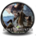
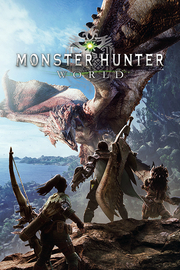

Monster Hunter: WorldDetalles
 |
|
| Tiempo de juego | No Jugado |
| Última actividad | Nunca |
| Añadido | 6/15/2025 15:02:51 |
| Modificado | 6/15/2025 15:11:43 |
| Estado de finalización | Not Played |
| Librería | Playnite |
| Fuente | 2TB GAS |
| Plataforma | PC (Windows) |
| Fecha de lanzamiento | |
| Puntuación de la Comunidad | 88 |
| Puntuación de la Crítica | 88 |
| Puntuación de usuario | |
| Género | Acción |
| Desarrollador | CAPCOM Co., Ltd. |
| Editor | CAPCOM Co., Ltd. |
| Característica | Cloud Saves Compat. Parcial Con Mando Cooperativo Cromos De Estadísticas HDR Disponible Logros De Multijugador Préstamo Familiar Remote Play En Tableta Tablas De Clasificación De Un Jugador |
| Enlaces | Punto de encuentro Discusiones Guías Noticias Página de la tienda PCGamingWiki Logros |
| Tag | Acción Ambientales Aventura Cooperativos Difíciles Exploración Fantasía Gran banda sonora Hack and slash MMORPG Multijugador Mundo abierto Personalización de personajes Rol Rol de acción Rol japonés Tercera persona Tipo «Dark Souls» Un jugador Valor continuo |
Descripción
¡Bienvenidos a un nuevo mundo! Conviértete en un gran cazador y acaba con feroces monstruos en un ecosistema lleno de vida donde podrás aprovechar tu entorno y su variada flora y fauna para vencer. ¡Caza solo o en cooperativo con hasta tres jugadores más y usa los materiales abandonados por tus enemigos caídos para crear nuevo equipo con que luchar con bestias aún más grandes y poderosas!
Tu tarea es aceptar misiones de caza de monstruos en una gran variedad de hábitats.
Abátelos y recibe materiales que podrás utilizar para crear armas y armaduras más poderosas con las que enfrentarte a monstruos aún más peligrosos.
Monster Hunter: World es la última entrega de la serie.
En ella podrás disfrutar de la mejor experiencia de juego, utilizando todos los recursos a tu alcance para acechar monstruos en un nuevo mundo rebosante de emociones y sorpresas.

HISTORIA
Cada década, los dragones ancianos cruzan el mar hasta el continente conocido como el Nuevo Mundo, en un fenómeno conocido como la migración de los Ancianos.
Para llegar hasta el fondo de este fenómeno misterioso, el gremio ha creado la comisión de investigación y la ha enviado en grandes flotas hacia el Nuevo Mundo.
Ha llegado el momento de que la 5.ª flota zarpe siguiendo a Zorah Magdaros, un dragón anciano de proporciones gigantescas.
En dicha flota, un cazador está a punto de embarcarse en el viaje más grande que jamás haya podido imaginar.

Hay multitud de zonas con ecosistemas rebosantes de vida.
Las expediciones en dichos lugares tienen casi garantizado hacer descubrimientos asombrosos.
y un compañero en quien confiar.
Tu equipamiento te dará el poder necesario para labrarte tu propio lugar en el Nuevo Mundo.
Tu arsenal de cazador
Hay catorce armas distintas disponibles para todo cazador, cada una con sus ataques y características particulares.
Muchos jugadores llegan a dominar varios tipos, mientras que algunos prefieren especializarse en uno solo.

Lafarillos
En cada escenario puedes encontrar multitud de rastros de monstruos, como huellas o marcas de garras.
Tus Lafarillos pueden percibir el olor de cada monstruo y guiarte hasta otros rastros cercanos.
A medida que consigas encontrar más rastros, los Lafarillos te darán aún más información.

Eslinga
La eslinga es una herramienta fundamental para cualquier cazador, ya que te permite armarte con las piedras y nueces
que abundan en cualquier escenario. Además, la versatilidad de la eslinga te permite hacer maniobras de distracción
como crear atajos, lo que te permitirá cazar de nuevas e interesantes formas.

Herramientas especializadas
Las herramientas especializadas activan efectos muy poderosos durante un periodo de tiempo limitado.
Puedes equiparte con hasta dos a la vez, y utilizarlas es sencillo: solo tienes que seleccionarlas
y activarlas como cualquier otro de los objetos que utilizas en tus cacerías.

Camaradas
Los camaradas son los compañeros más fieles que cualquier cazador puede tener sobre el terreno,
y pueden especializarse en un buen número de habilidades de apoyo ofensivas, defensivas y restaurativas.
El camarada de nuestro protagonista está muy orgulloso de formar parte de la 5.ª flota,
y es un miembro de la comisión tan valioso como cualquier cazador.

INTRODUCCIÓN
PRESENTACIÓN
Combate contra monstruos gigantescos en escenarios épicos.Tu tarea es aceptar misiones de caza de monstruos en una gran variedad de hábitats.
Abátelos y recibe materiales que podrás utilizar para crear armas y armaduras más poderosas con las que enfrentarte a monstruos aún más peligrosos.
Monster Hunter: World es la última entrega de la serie.
En ella podrás disfrutar de la mejor experiencia de juego, utilizando todos los recursos a tu alcance para acechar monstruos en un nuevo mundo rebosante de emociones y sorpresas.
HISTORIA
Cada década, los dragones ancianos cruzan el mar hasta el continente conocido como el Nuevo Mundo, en un fenómeno conocido como la migración de los Ancianos.
Para llegar hasta el fondo de este fenómeno misterioso, el gremio ha creado la comisión de investigación y la ha enviado en grandes flotas hacia el Nuevo Mundo.
Ha llegado el momento de que la 5.ª flota zarpe siguiendo a Zorah Magdaros, un dragón anciano de proporciones gigantescas.
En dicha flota, un cazador está a punto de embarcarse en el viaje más grande que jamás haya podido imaginar.
ECOSISTEMA
Un mundo lleno de vidaHay multitud de zonas con ecosistemas rebosantes de vida.
Las expediciones en dichos lugares tienen casi garantizado hacer descubrimientos asombrosos.
LA CAZA
Un arsenal completo de equipo,y un compañero en quien confiar.
Tu equipamiento te dará el poder necesario para labrarte tu propio lugar en el Nuevo Mundo.
Tu arsenal de cazador
Hay catorce armas distintas disponibles para todo cazador, cada una con sus ataques y características particulares.
Muchos jugadores llegan a dominar varios tipos, mientras que algunos prefieren especializarse en uno solo.
Lafarillos
En cada escenario puedes encontrar multitud de rastros de monstruos, como huellas o marcas de garras.
Tus Lafarillos pueden percibir el olor de cada monstruo y guiarte hasta otros rastros cercanos.
A medida que consigas encontrar más rastros, los Lafarillos te darán aún más información.
Eslinga
La eslinga es una herramienta fundamental para cualquier cazador, ya que te permite armarte con las piedras y nueces
que abundan en cualquier escenario. Además, la versatilidad de la eslinga te permite hacer maniobras de distracción
como crear atajos, lo que te permitirá cazar de nuevas e interesantes formas.
Herramientas especializadas
Las herramientas especializadas activan efectos muy poderosos durante un periodo de tiempo limitado.
Puedes equiparte con hasta dos a la vez, y utilizarlas es sencillo: solo tienes que seleccionarlas
y activarlas como cualquier otro de los objetos que utilizas en tus cacerías.
Camaradas
Los camaradas son los compañeros más fieles que cualquier cazador puede tener sobre el terreno,
y pueden especializarse en un buen número de habilidades de apoyo ofensivas, defensivas y restaurativas.
El camarada de nuestro protagonista está muy orgulloso de formar parte de la 5.ª flota,
y es un miembro de la comisión tan valioso como cualquier cazador.